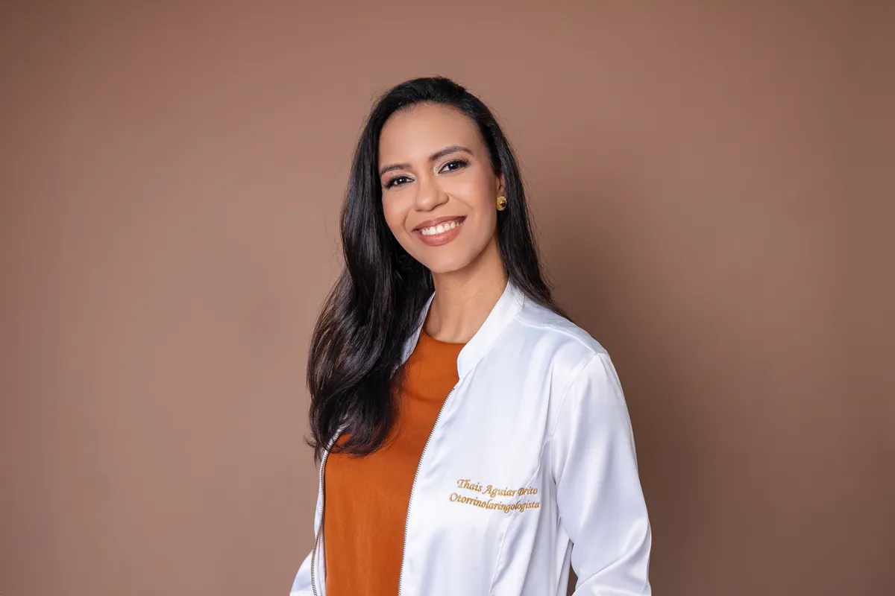
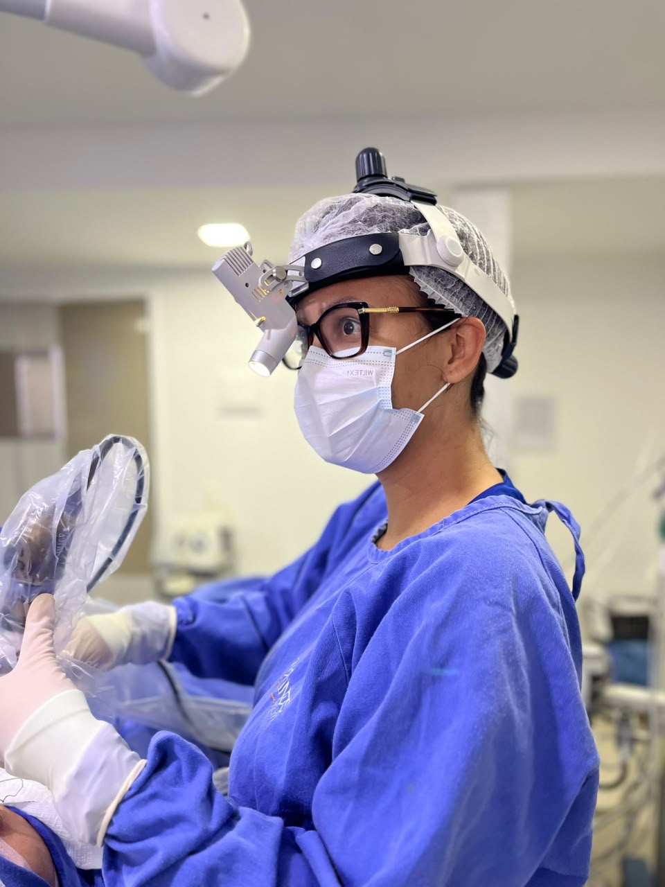
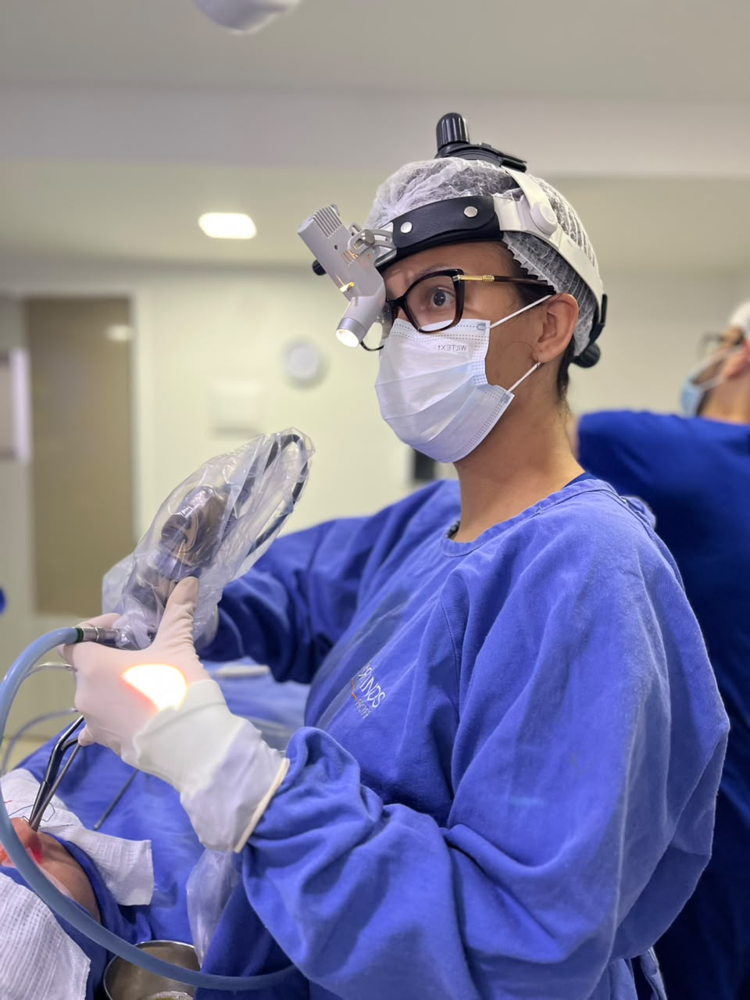
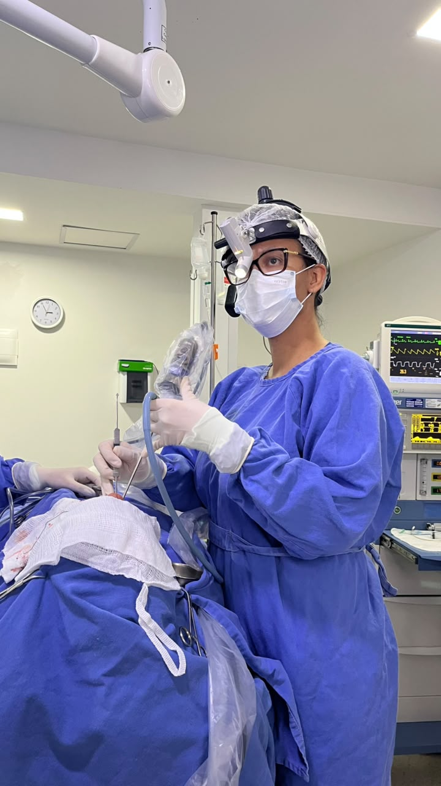
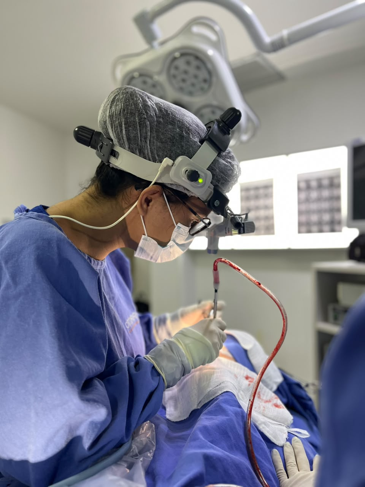
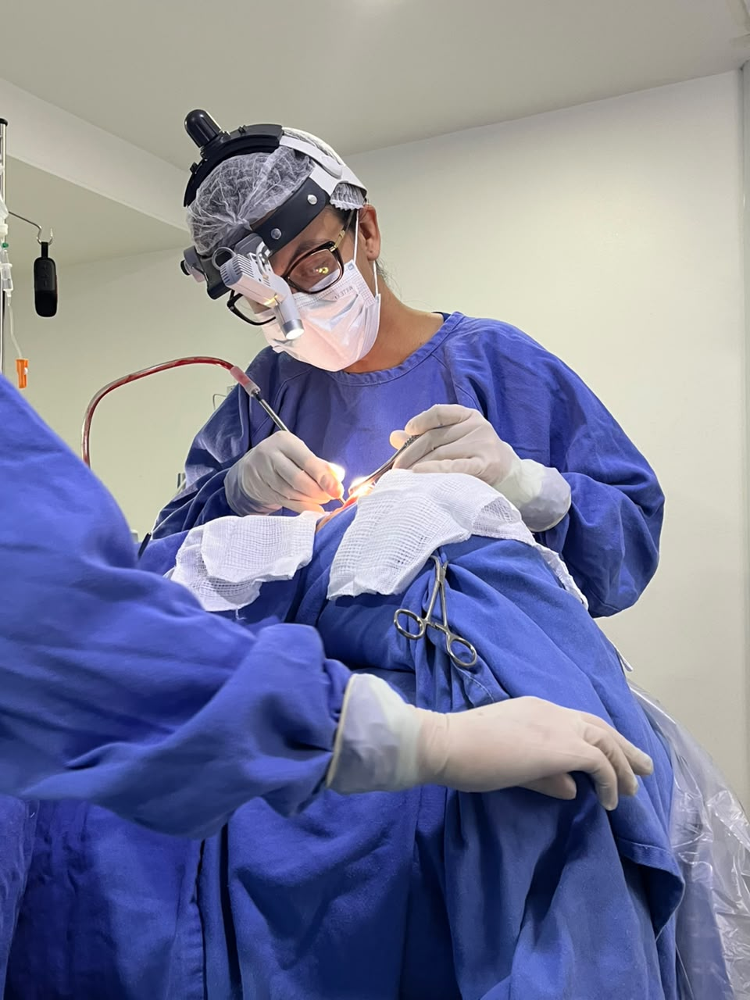

Rinite e nariz entupido
Investigação de sintomas alérgicos e obstrução nasal persistente.
Otorrinolaringologia · Rinologia
Respirar bem.
Viver melhor.
Cuidado especializado para respiração, nariz e seios da face.
Agendar consultaOtorrinolaringologia · Rinologia · Cirurgia Endoscópica Nasal


01 / Sobre a médica
A Dra. Thaís Aguiar une formação em otorrinolaringologia e aprofundamento em rinologia para investigar cada queixa com cuidado e orientar o tratamento mais adequado.
Seu trabalho se concentra na saúde do nariz e dos seios da face, com atenção à respiração, ao sono e aos sintomas que afetam o dia a dia.
Medicina pela Faculdade Pernambucana de Saúde — FPS
Otorrinolaringologia pela FAMERP
Subespecialização em Rinologia e Cirurgia Endoscópica Nasal pela FAMERP
Membro da Pernambuco Otorrinos
02 / Tratamentos e sintomas
Uma avaliação especializada ajuda a entender a origem dos sintomas e as possibilidades de tratamento.
Investigação de sintomas alérgicos e obstrução nasal persistente.
Cuidados para quadros recorrentes ou prolongados dos seios da face.
Avaliação de alterações que podem dificultar a passagem de ar.
Investigação de fatores otorrinolaringológicos relacionados à respiração durante o sono.
Avaliação de perda, redução ou mudanças na percepção dos cheiros.
Atuação cirúrgica especializada quando há indicação após avaliação.
03 / Rinologia
O nariz e os seios da face participam de funções essenciais como respirar e perceber cheiros. Sintomas parecidos podem ter origens diferentes, por isso a avaliação individualizada faz diferença.
Conheça a consulta

04 / A consulta
A consulta é o espaço para entender seus sintomas, investigar o que pode estar acontecendo e conversar sobre os próximos passos.
História, sintomas e impacto na sua rotina.
Exame otorrinolaringológico conforme a necessidade clínica.
Orientações e opções de cuidado adequadas ao seu caso.
Atuação cirúrgica
A formação em rinologia inclui a avaliação de situações em que um procedimento cirúrgico pode ser considerado. A indicação depende sempre de uma investigação cuidadosa e de uma conversa clara sobre cada caso.





No Instagram
Uma seleção de publicações da Dra. Thaís Aguiar e da Pernambuco Otorrinos.
Dúvidas frequentes
Algumas respostas para orientar seu primeiro passo.
Quando sintomas como nariz entupido, crises de sinusite, ronco, dificuldade para respirar pelo nariz ou alterações do olfato se tornam frequentes ou persistentes.
Não. São condições diferentes, embora alguns sintomas possam se parecer. A avaliação ajuda a identificar o que está acontecendo.
Não. A conduta depende dos sintomas, do exame e da avaliação individual.
Use o botão de agendamento para escolher uma das opções de atendimento e confirmar os detalhes diretamente com a equipe.
Localização
Os endereços e a disponibilidade de cada unidade podem ser confirmados no agendamento.
Vamos conversar?
Agende sua consulta e encontre o atendimento adequado para você.
Agendar consulta